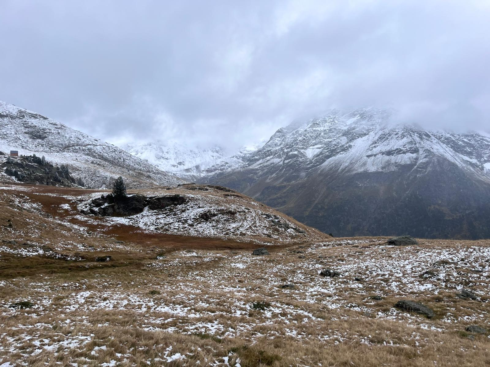

Sport & Movement
Movement and long-term discipline
I am currently training for a half marathon and combine endurance running with Pilates and high-intensity training. I enjoy movement and sport, and I am always motivated by setting new goals and challenging myself.